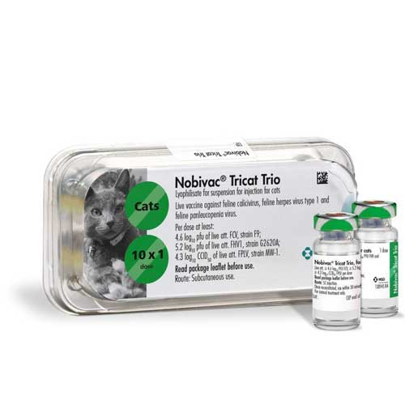

واکسن زنده تخفیف حدت یافته 3 گانه گربه بر ضد ویروس پنلوکوپنی،هرپس ویروس و کلسی ویروس، MSD هلند
📝ترکیب واکسن:
هر دز از واکسن لیوفیلیزه حاوی 5.2Log₁₀ pfu ویروس عامل بیماری هرپس ویروس تیپ ١ سویه G2620A و 4.6Log₁₀ pfuویروس عامل بیماری کلسی ویروس (FCV) سویه F9 و 4.3Log₁₀ CCID₅₀ ویروس عامل بیماری پن لکوپنی (FPLV) سویه MW-1 میباشد.
📝شکل و نوع واکسن:
واکسن زنده تخفیف حدت یافته، به صورت لیوفیلیزه
📝موارد مصرف:
واکسن سه گانه جهت جلوگیری از بروز بیماری Feline herpes virus type1، Calcivirusو Feline panleucopenia در گربه ها
📝دز و نحوه مصرف:
ابتدا محتوی واکسن را در حلال مخصوص Nobivac Tricat Trio به خوبی حل کنید. از تمام محتوی واکسن استفاده کرده و بصورت زیر جلدی تزریق کنید. اولین دز تزریق واکسن در ٨-۹ هفتگی، تزریق دوم در ١٢ هفتگی و تزریق سوم در ١۶-٢۰ هفتگی (در صورت دلخواه) توصیه میشود.
📝زمان شروع ایمنی و افزایش تیتر:
٤ هفته برای عفونت های FCV & FHV
۳هفته برای عفونت های FPLV
ماندگاری ایمنی متعاقب واکسیناسیون برای FCV & FHV، ١ سال و برای عفونت های با منشآ FPLV به مدت ۳ سال میباشد. در نتیجه تکرار واکسیناسیون برای ویروس های FCV & FHV، سالیانه و برای ویروس FPLV، هر ۳ سال یکبار میباشد.
📝توصیه ها و احتیاطات لازم:
دقت کنید که واکسن از شبکه توزیع رسمی تهیه شده باشد.
واکسن باید طبق نظر دکتر دامپزشک مصرف شود.
با هیچ گونه واکسن زنده و یا محصولات ایمنولوژیکی مخلوط نگردد.
مطابق آیین نامه دفع زباله، تمام سرنگ های خالی دور ریخته شوند و تحت هیچ شرایطی مورد استفاده مجدد قرار نگیرند.
دور از دسترس کودکان، حیوانات و افراد بی اطلاع نگهداری شود .
موارد منع مصرف: از واکسیناسیون گربه های بیمار، گربه های آبستن و گربه های شیرده خودداری شود.
📝عوارض جانبی:
ممکن است برای مدت ١ تا ۲ روز محل تجویز متورم و دردناک باشد.
به ندرت ممکن است در اولین روز بعد از واکسیناسیون با افزایش دمای بدن و بی حالی مواجه شویم.
تا ۲ روز پس از تزریق در برخی از گربه ها عطسه، سرفه، ترشحات بینی یا کاهش اشتها ممکن است ظاهر شود.
در موارد بسیار نادر ممکن است واکنش های ازدیاد حساسیت مثل خارش، تنگی نفس، استفراغ و اسهال دیده شود.
📝شرایط نگهداری:
واکسن در دمای ٢ تا ٨ درجه سانتی گراد و حلال واکسن در دمای اتاق و زیر ۲٥ درجه سانتی گراد، دور از نور حمل و نگهداری شود.
📝مدت نگهداری:
واکسن در بسته بندی کارخانه ای تا ۳۳ ماه و حلال تا ٥ سال میباشد.
در صورت آماده سازی واکسن برای تزریق تا ۳۰ دقیقه میباشد.
بسته بندی: ویال های شیشه ای و تک دزی واکسن و حلال Nobivac Tricat Trio در بسته های 5، 10، 25، 50 عددی توسط شرکت MSD هلند تولید میگردد.
کاتالوگ محصول